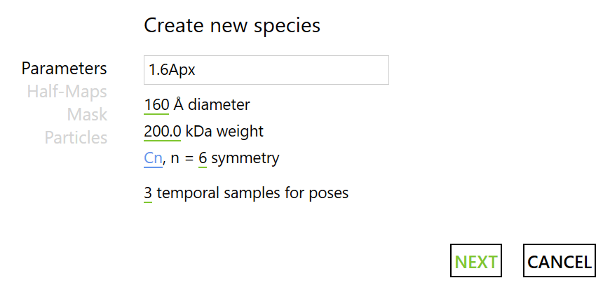
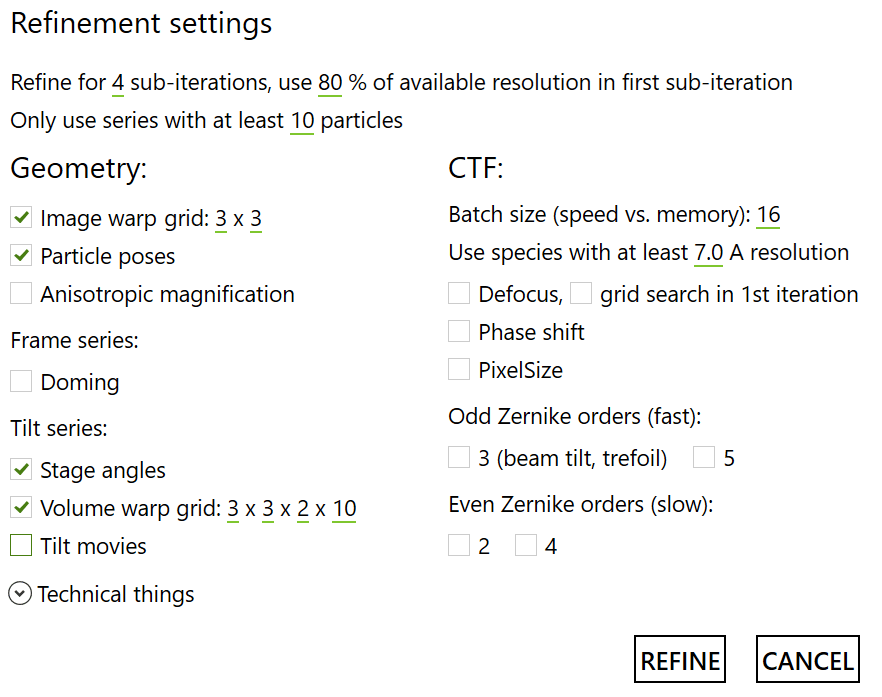
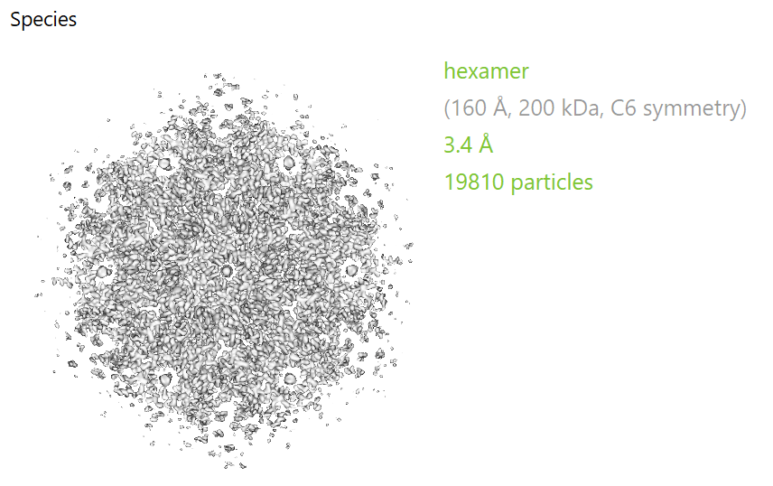
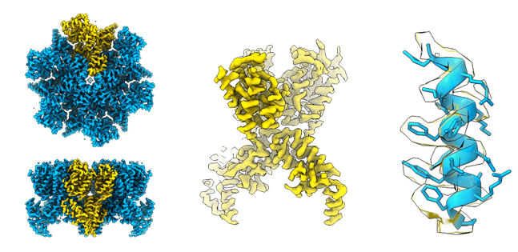

Multi-particle refinement
Contents
Multi-particle refinement#
Now that our particle poses are mostly correct and we have a good estimate of the reconstructed density, there are several parameters that can be tweaked a posteriori to further refine our result. We will perform these optimisations in M.
Create Population and Species#
A project in M is referred to as a population. To create a new one press the big + button in the center of the window, and provide a directory. Here, we put it in root/M/1.6Apx/.
We then need to add a data source. Click on Manage data sources to add a local source, and select the *.settings file inside the frames directory. Make sure to Include items outside of filter ranges (since we did not use the filters for this project), give it a name such as HIV and press CREATE. We also only want to Use only first 15 frames/tilts in order to refine only based on the high resolution information.
We can then create a Species by pressing the next big ‘+’, selecting from scratch and filling in the parameters as follows:

Afterwards, select the two last halfmaps generated by the RELION refinements at 1.6Å/px. For the mask, we will generate a binary mask around the central hexamer (160 Å diameter).
Mask one of the halfmaps to include only the central hexamer in Dynamo then use your favourite program and determine an appropriate threshold for binarisation. Use this as the --ini_threshold parameter in the following relion_mask_create command, replacing <latest_halfmap> as appropriate:
relion_mask_create --i <latest_halfmap>.mrc --angpix 1.6 --extend_inimask 5 --o mask_1.6Apx.mrc --ini_threshold 0.05
If using Relion3.1+, we need to reformat the final particle positions .star file using relion_star_downgrade to the Relion3.0 specification (Warp does not support Relion 3.1+):
relion_star_downgrade -s run_it019_data.star
M will only look for file names with the pattern *_data.star, so we need to rename the output from relion_star_downgrade (e.g., from run_it019_data_rln3.0.star to rln3.0_run_it019_data.star). Now, select this reformatted .star file containing the final particle positions from Relion as the input for particle poses in M. Click FINISH to generate the new species.
Refinement Parameters#
To start the refinement, click on the REFINE button and fill in the parameters as follows.
Note
We will do a few iterations of refinements: first some with only spatial parameter optimizations, and then with most parameters. We chose to first optimise a smaller number of parameters to avoid falling into a local minimum, there may be a better way to do this!
First, run four iterations with these parameters: 
Afterwards, three iterations as follows:

End Result!#
If everything went well, after the second round of refinements you should be able to get to something like this:
{kind=link}
Here’s a closer look to the map compared to the available structures:

Congratulations with your reconstruction!